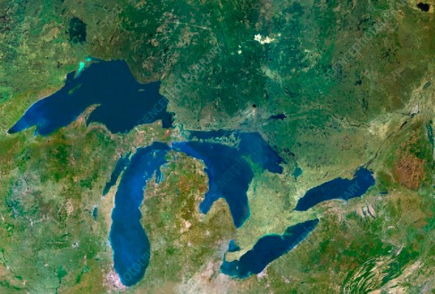

Build realistic and flexible animal simulations
The Animal Life Simulation Library, written for JavaScript, is a multi-purpose library written to the facilitate creation of animal simulations that can be adapted to many purposes, including physical resource management and game hunting sites. This page will guide you through creating a simulation using this library. The full documentation can be found here.
The first item we need to build our simulation is a map of the region the animals will be inhabitating. Below is a map of the Great Lakes.
We will now simulation features to this image using the library. The final result is shown at the bottom of the page. To inform our users of the animals we are planning to simulate, we will first create a display that will list important information of each animal. This is done through the infoDisplayBuilder constructor.
const infoDisplay = new infoDisplayBuilder("displayInfoContainer")
The parameter takes the id of the element where the info display is to be mounted. We can now add some data that the info display will take. If we wanted to add a bear for instance, we can add the following line of code.
const bearAlt = "Brown bear facing front"
const bearDesc = "Generally living in more remote areas, bears have no predators in most regions."
infoDisplay.addAnimalType("bear", "images/bear.png", bearAlt, bearDesc, 5, 8, "land", ["squirrel", "anteater"], [["berries", 10, 15]], 10, 50)
This gives us the bear section in the result. The parameters to addAnimalType include those that information display is using and the more technical aspects that the simulation logic uses. We can similarly add more animals.
const crocodileAlt = "Crocodile facing right with mouth open"
const crocodileDesc = "A major marine predator in the southern lakes and have been known to move far away from water to catch prey."
infoDisplay.addAnimalType("crocodile", "images/crocodile.png", crocodileAlt, crocodileDesc, 6, 10, "water", ["squirrel"], [], 15, 30)
const squirrelAlt = "Squirrel with white, gray, and brown fur lying still"
const squirrelDesc = "Very quick and small animals that nonetheless end up often as roadkill."
infoDisplay.addAnimalType("squirrel", "images/squirrel.png", squirrelAlt, squirrelDesc, 10, 15, "land", [], [], 40, 10)
const anteaterAlt = "Squirrel with white, gray, and brown fur lying still"
const anteaterDesc = "Although humid regions are not normally their habitat, these areas sometimes have many ants and few predators for them."
infoDisplay.addAnimalType("anteater", "images/anteater.png", anteaterAlt, anteaterDesc, 8, 5, "land", [], [], 25, 20)
An information part of the simulation is keeping track of the resources that are being modelled. To do this, we use the resource chart constructor as follows.
const resChartBuilder = new resourceChartBuilder("resourceChartContainer", "berries", 300, 200, 10)
resChartBuilder.buildChart()
At this point, we can initialize the simulation. The simulation methods are called through the simulationBuilder object.
const simBuilder = new simulationBuilder("mapContainer", resChartBuilder, infoDisplay, "images/great-lakes.jpg", false, 800, 480, 20, 100, 50, 40, 100)
One feature of the library is that it can be used for both developers and users. In developer mode, water regions can be carved out and the code for these regions are displayed in the browser. Here is some of the output an example run.
simBuilder.defineWaterRegion(30, 315, 106, 203)
simBuilder.defineWaterRegion(370, 455, 227, 353)
simBuilder.defineWaterRegion(220, 269, 254, 443)
simBuilder.defineWaterRegion(559, 678, 291, 320)
simBuilder.defineWaterRegion(404, 578, 366, 448)
simBuilder.defineWaterRegion(453, 518, 214, 279)
simBuilder.defineWaterRegion(536, 625, 320, 343)
To initialize the animals at the start of the simulation, we can call the addAnimalOnMap function as follows. Each of the animals belongs to one of the types that we put in the info display earlier.
simBuilder.addAnimalOnMap("bear", 600, 150, true)
simBuilder.addAnimalOnMap("bear", 170, 360, true)
simBuilder.addAnimalOnMap("bear", 200, 310, true)
simBuilder.addAnimalOnMap("crocodile", 219, 160, true)
simBuilder.addAnimalOnMap("crocodile", 420, 420, true)
simBuilder.addAnimalOnMap("crocodile", 400, 300, true)
simBuilder.addAnimalOnMap("squirrel", 560, 50, true)
simBuilder.addAnimalOnMap("squirrel", 100, 390, true)
simBuilder.addAnimalOnMap("squirrel", 750, 400, true)
simBuilder.addAnimalOnMap("anteater", 600, 50, true)
simBuilder.addAnimalOnMap("anteater", 160, 250, true)
simBuilder.addAnimalOnMap("anteater", 630, 330, true)
We can also add a resource type to be modelled.
simBuilder.addResourceType("berries", 1000, 2000, 30)
Finally we can add a control panel that allows users to functions such that starting, fast-forwarding, or resetting a simulation.
[ simBuilder.addControlPanel("user")
The final result of the code laid out here is the following.